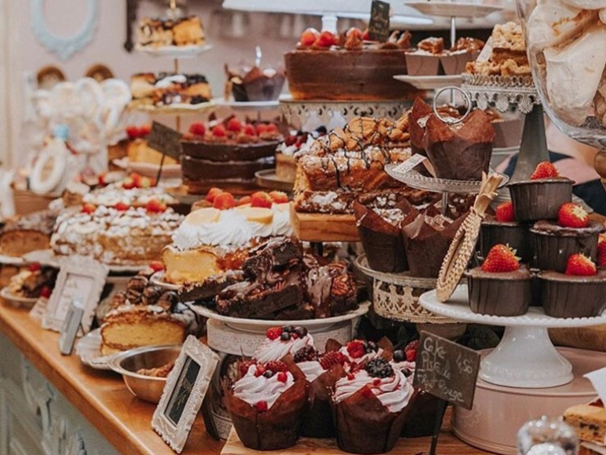
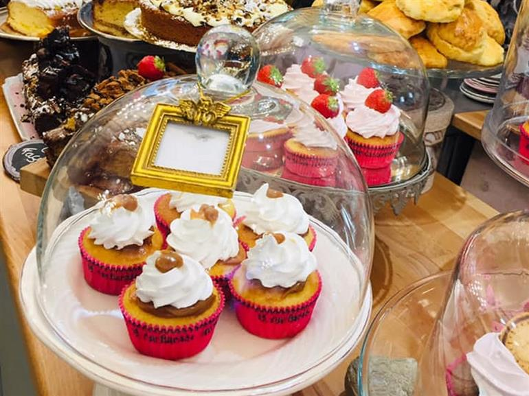

Instantanés gourmandsUn peu de douceur
Un peu de douceur
en images.
Découvrez de vraies photographies de Meery Cake, prises au salon et présentées par les offices de tourisme ou des visiteurs. Certaines peuvent montrer l’ancien établissement.


Galerie
Choisissez une ambiance
Sélectionnez une catégorie, puis appuyez sur une photo pour l'agrandir.
Photographies d’archives : leur date et leurs conditions de réutilisation restent à vérifier.
Une idée de gâteau ?
Imaginons votre création
Vous pouvez préparer votre projet en précisant l'occasion, les goûts et les décorations souhaitées.
Demander un gâteau personnaliséLe salon
Rendez-vous à Carcassonne
Retrouvez les informations pratiques et la carte du salon.
Informations pratiques